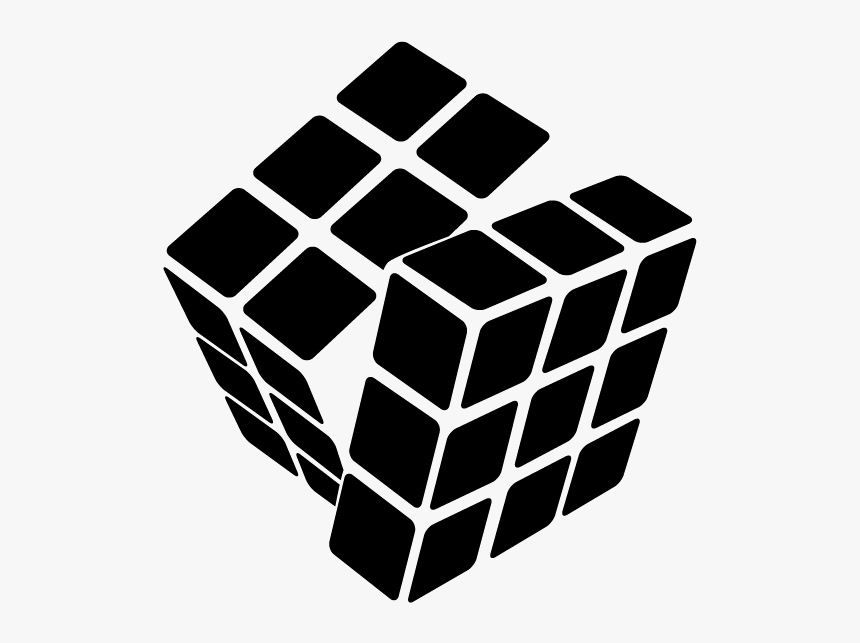

The Rubik's Cube is a 3-D combination puzzle originally invented in 1974 by Hungarian sculptor and professor of architecture Ernő Rubik. Originally called the Magic Cube, the puzzle was licensed by Rubik to be sold by Pentangle Puzzles in the UK in 1978, and then by Ideal Toy Corp in 1980 via businessman Tibor Laczi and Seven Towns founder Tom Kremer. The cube was released internationally in 1980 and became one of the most recognized icons in popular culture. It won the 1980 German Game of the Year special award for Best Puzzle. As of March 2021, over 450 million cubes had been sold worldwide, making it the world's bestselling puzzle game and bestselling toy. The Rubik's Cube was inducted into the US National Toy Hall of Fame in 2014.
On the original classic Rubik's Cube, each of the six faces was covered by nine stickers, each of one of six solid colours: white, red, blue, orange, green, and yellow. Some later versions of the cube have been updated to use coloured plastic panels instead, which prevents peeling and fading. Since 1988, the arrangement of colours has been standardised with white opposite yellow, blue opposite green, and orange opposite red, and the red, white, and blue arranged clockwise in that order. On early cubes, the position of the colours varied from cube to cube.
An internal pivot mechanism enables each face to turn independently, thus mixing up the colours. For the puzzle to be solved, each face must be returned to have only one colour. It has inspired other designers to create a number of similar puzzles with various numbers of sides, dimensions, and mechanisms.
Although the Rubik's Cube reached its height of mainstream popularity in the 1980s, it is still widely known and used. Many speedcubers continue to practise it and similar puzzles, and compete for the fastest times in various categories. Since 2003, the World Cube Association (WCA), the international governing body of the Rubik's Cube, has organised competitions worldwide and recognises world records.
Source: Wikipedia